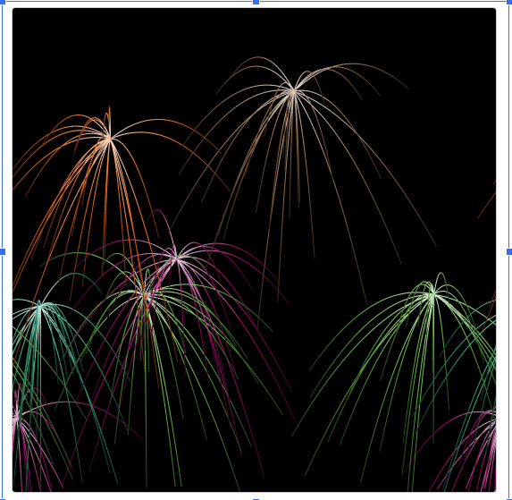

Home
Portfolio
About Me
" This is our very first project. We created this game on Scratch. The goal of the game is to use your mouse cursor to move the guy in order to hit the ball into the gray button. Once you have reached a certain amount of points, the gray button will start moving, making it harder to score points. Good luck and have fun!!!!"
" This is our second project. In this activity, I was assigned to create an app that could be used as a shopping list. In order to use my app, simply type in the product you want to buy at the store and the app will save it in either a list for Costco or Sprouts, it's your choice. Hope this helps!"


" The interactive fiction story I made was about a man named Wolfgang. Wolfgang starts out as a rich man who is arrogant and selfish. While on a cruise, however, he gets stuck on a mysterious island here he meets some natives who teach him the values of family, respect, and giving. The program I created asks the player questions they must answer to decide the fate of Wolfgang. Try it out and have fun!"

" This was our simulation we made using netlogo. The original was a regular animation of fireworks. My group and I divided the velocity in both the x and y by 1000 to decrease its speed. The fireworks move slower after exploding and the particles fall immediately."